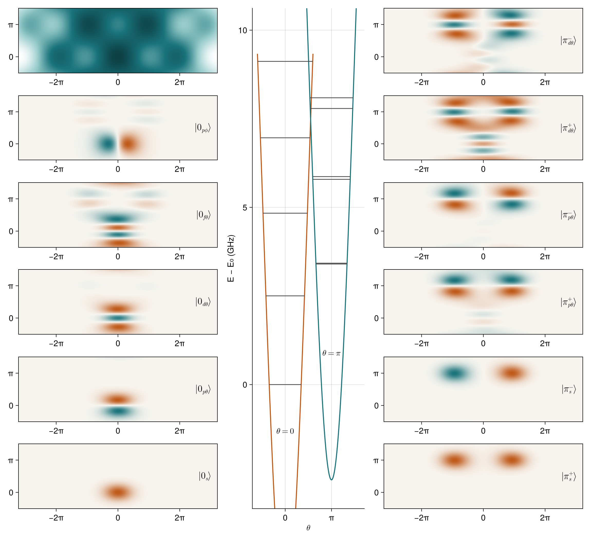

Tutorial: a soft zero-pi qubit
This tutorial solves the soft zero-pi qubit realized by Gyenis et al., PRX Quantum 2, 010339 (2021) (arXiv:1910.07542), with all three of its modes θ, φ and ζ, and redraws the two-dimensional wavefunctions of the paper's Fig. 2.
The circuit
The paper fits its spectroscopy with H = 4E_C^θ (n_θ - n_g)² + 4E_C^φ n_φ² - 2E_J cos θ cos φ + E_L φ² + E_J dE_J sin θ sin φ at zero flux. The circuit behind it is one loop of two junctions and two superinductors, with a large capacitor across each pair of opposite nodes; the junction energies differ by dE_J. This circuit-quantization script builds that circuit in the paper's own parameters, quantizes it in the coordinates θ, φ, ζ (and the cyclic Σ) and writes the spec:
import sympy as sym
import circuit_quantization as cq
from circuit_quantization import Branch, Circuit, Loops, quantize
# Parameters as in the paper: E_C^theta, E_C^phi, E_J, E_L (GHz), junction asymmetry dE_J, external flux.
ECt, ECp, EJ, EL = sym.symbols("E_Ctheta E_Cphi E_J E_L", positive=True)
dEJ, vx = sym.symbols("dE_J varphi_ext", real=True)
# Element charging energies (1/E adds like a capacitance). With C_phi = 2 C_J and C_theta = 2 C + 2 C_J:
xJ = 2 * ECp # each junction's capacitance C_J
xC = 2 * ECt * ECp / (ECp - ECt) # each large capacitor C
circuit = Circuit([
Branch("J1", 1, 2, C=cq.ghz_to_farad(xJ), EJ=EJ * (1 + dEJ / 2)),
Branch("J2", 3, 4, C=cq.ghz_to_farad(xJ), EJ=EJ * (1 - dEJ / 2)),
Branch("L1", 2, 3, L=cq.ghz_to_henry(EL)),
Branch("L2", 4, 1, L=cq.ghz_to_henry(EL)),
Branch("C1", 1, 3, C=cq.ghz_to_farad(xC)),
Branch("C2", 2, 4, C=cq.ghz_to_farad(xC)),
])
# The ring J1 L1 J2 L2 (closed by L2) carries the external flux; the capacitive loops carry none.
fluxes = {name: 0 for name in Loops.from_circuit(circuit).names}
fluxes["L2"] = cq.phase_to_weber(-vx)
loops = Loops.from_tree(circuit, cq.default_tree(circuit), fluxes)
# Columns theta, phi, zeta, Sigma of the node fluxes; Sigma is cyclic in this floating circuit.
s = 1 / sym.sqrt(2)
Z = sym.Matrix([[1, 1, s, 1], [-1, -1, s, 1], [-1, 1, -s, 1], [1, -1, -s, 1]]) / 2
res = quantize(circuit, loops, Z, ("c", "e", "h", "cy"))
cq.save_spec(res, "soft_zero_pi.json", mode_names=["theta", "phi", "zeta"],
subs={sym.Symbol("n_g1", real=True): sym.Symbol("n_g", real=True)})The script writes the spec that this page loads (it is test/fixtures/generated/soft_zero_pi.json in the repository); Building circuits shows how to do the same from a Julia session through PythonCall instead. This is the file, with each matrix row on one line:
using KronFreeCircuits, CairoMakie
json = read("soft_zero_pi.json", String)
print(replace(json, r"\[[^\[\]{}]*\]" => row -> replace(row, r"\s+" => " "))){
"format": "kronfree-spec",
"version": 1,
"units": "GHz",
"parameters": [ "E_Ctheta", "E_Cphi", "E_L", "varphi_ext", "n_g", "E_J", "dE_J" ],
"modes": [
{
"name": "theta",
"type": "c"
},
{
"name": "phi",
"type": "e"
},
{
"name": "zeta",
"type": "h"
}
],
"E_C": [
[ "E_Ctheta", "0", "0" ],
[ "0", "E_Cphi", "0" ],
[ "0", "0", "2 * E_Cphi .* E_Ctheta ./ (E_Cphi - E_Ctheta)" ]
],
"E_L": [
[ "0", "0", "0" ],
[ "0", "2 * E_L", "0" ],
[ "0", "0", "E_L" ]
],
"flux_linear": [ "0", "E_L .* varphi_ext", "sqrt(2) * E_L .* varphi_ext / 2" ],
"n_g": [ "n_g", "0", "0" ],
"cosines": [
{
"energy": "E_J .* dE_J / 2 + E_J",
"omega": [ 1, 1, 0 ],
"offset": "0"
},
{
"energy": "-E_J .* dE_J / 2 + E_J",
"omega": [ -1, 1, 0 ],
"offset": "0"
}
],
"constant": "0",
"_generator": {
"package": "circuit-quantization",
"version": "0.2.0",
"branches": [ "C1", "C2", "J1", "J2", "L1", "L2" ],
"commit": "658e3c8f94b3e83066aaf92925b1dce9e2634d09",
"dirty": false,
"script": "test/fixtures/generate_specs.py"
},
"_comment": [ "The soft zero-pi of Gyenis et al., PRX Quantum 2, 010339 (arXiv:1910.07542): J1 (1->2), J2 (3->4), L1 (2->3), L2 (4->1), C1 (1->3), C2 (2->4), floating; built by the script on docs/src/tutorials/soft_zero_pi.md.", "Parameters as in the paper: E_Ctheta = e^2/2(2C + 2C_J), E_Cphi = e^2/2(2C_J), E_J, E_L, junction asymmetry dE_J (J1 has E_J (1 + dE_J/2), J2 E_J (1 - dE_J/2)), varphi_ext.", "Default (irrotational) flux assignment: the ring flux on L2, flux_linear on phi and zeta.", "Sector label n_g1 renamed n_g." ]
}It is the paper's Hamiltonian term by term: E_C holds E_Ctheta and E_Cphi (the format's kinetic term is 4 nᵀ E_C n), E_L gives E_L φ², and the two junctions are E_J (1 ± dE_J/2) cos(±θ + φ), whose sum is -2E_J cos θ cos φ + E_J dE_J sin θ sin φ. ζ, the third mode, sees only the large capacitors and the inductors. circuit-quantization's default flux assignment puts the loop flux on the inductor that closes the loop, so varphi_ext enters as the linear terms flux_linear; that is a gauge equivalent to the paper's cos(φ − φ_ext/2), and this page works at zero flux.
spec = load_spec("soft_zero_pi.json")
[(m.name, m.type) for m in spec.modes]3-element Vector{Tuple{Symbol, Symbol}}:
(:theta, :c)
(:phi, :e)
(:zeta, :h)The supplement (Table S2) gives EC^φ = 1.142, EC^θ = 0.092, EJ = 6.013 and EL = 0.377 GHz, with a junction asymmetry dE_J = 0.1 and no capacitive or inductive disorder:
ECφ, ECθ, EJ, EL = 1.142, 0.092, 6.013, 0.377
θ = (E_Ctheta=ECθ, E_Cphi=ECφ, E_J=EJ, E_L=EL, dE_J=0.1, n_g=0.0, varphi_ext=0.0)The tree
The (θ, φ) leaf holds the two qubit modes, with θ in a charge basis and φ on a phase grid; ζ is an oscillator in a Fock basis, and the root combines them:
function zpf(spec, mode, θ) # zero-point phase width of a harmonic mode
i = findfirst(m -> m.name === mode, spec.modes)
return (2real(spec.E_C[i, i](θ)) / real(spec.E_L[i, i](θ)))^(1 / 4)
end
leaf = Node([:theta => ChargeBasis(20), :phi => PhaseGrid(-8π, 8π, 401)]; compute=16, keep=lowest(14))
zeta = Node([:zeta => FockBasis(10; phi_zpf=zpf(spec, :zeta, θ))]; keep=lowest(3))
root = Node([leaf, zeta]; keep=lowest(8))
sys = materialize(root, spec, θ)
E = energies(sys)
round.(E .- E[1]; digits=4)8-element Vector{Float64}:
0.0
0.7769
1.5538
2.5033
3.2802
3.4016
3.4254
4.0571The junction asymmetry acts only on θ and φ, so ζ stays exactly decoupled: the root spectrum is the leaf spectrum plus a ladder of ζ quanta. Capacitive or inductive disorder (unequal large capacitors or superinductors in the script) would couple ζ to the qubit modes, and the same tree would then mix them at the root.
Eleaf, Eζ = energies(sys, leaf), energies(sys, zeta)
ωζ = Eζ[2] - Eζ[1]
(ζ_quantum=ωζ, second_root_level=E[2] - E[1], leaf_gap=Eleaf[2] - Eleaf[1])(ζ_quantum = 0.7768961737335984, second_root_level = 0.7768961737335989, leaf_gap = 2.503310750116457)The asymmetry sin θ sin φ makes the leaf complex in the charge basis (see Real arithmetic):
arithmetic(sys, leaf):complexWavefunctions
phase_wavefunction(sys, leaf; charge=:theta) returns each leaf state with θ in its charge representation and φ on the grid. A charge-basis state is a finite Fourier series, ψ(θ) = Σₙ cₙ e^{inθ}/√2π, so it can be evaluated exactly on as fine a θ grid as a plot needs, rather than on the 2N + 1 points of the discrete transform. Each state's global phase is chosen to make its largest value real and positive; the states are then real.
g, c = phase_wavefunction(sys, leaf; charge=:theta) # c[n, φ, s]
θf = range(-π / 2, 3π / 2; length=241)
F = [cis(n * t) / sqrt(2π) for t in θf, n in g.theta]
win = abs.(g.phi) .<= 3.2π
φw = g.phi[win]
ψ = map(axes(c, 3)) do s
w = F * c[:, win, s] # ψ_s(θ, φ) on the fine θ grid
k = argmax(abs.(w))
w .*= conj(w[k]) / abs(w[k])
real.(w)
endThe paper sorts the states by valley: those mostly near θ = 0 and those mostly near θ = π.
inπ(s) = sum(abs2, ψ[s][abs.(θf .- π) .< π / 2, :]) > sum(abs2, ψ[s][abs.(θf) .< π / 2, :])
zero_valley = filter(!inπ, axes(c, 3))[1:5]
π_valley = filter(inπ, axes(c, 3))[1:6]
Erel = Eleaf .- Eleaf[1]
(zero_valley=round.(Erel[zero_valley]; digits=3), π_valley=round.(Erel[π_valley]; digits=3))(zero_valley = [0.0, 2.503, 4.836, 6.963, 9.119], π_valley = [3.402, 3.425, 5.792, 5.869, 7.79, 8.092])The two lowest states of the π valley, |π_s^±⟩, are split by tunneling along φ between the valley's two minima at φ ≈ ±π:
1000 * (Erel[π_valley[2]] - Erel[π_valley[1]]) # MHz23.81668051036101The paper measures this hybridization gap as about 20 MHz.
The figure in the layout of the paper's Fig. 2: the potential, the states of the θ = 0 valley (left) and of the θ = π valley (right), and between them the cuts V(θ, φ = 0) and V(θ, φ = π) with each valley's levels.
orange, teal = RGBf(0.75, 0.35, 0.10), RGBf(0.10, 0.45, 0.48)
diverging = cgrad([teal, RGBf(0.97, 0.96, 0.94), orange]) # orange positive, as in the paper
V(t, p) = -2EJ * cos(t) * cos(p) + EL * p^2
zlabels = [L"|0_{s}\rangle", L"|0_{p\theta}\rangle", L"|0_{d\theta}\rangle", L"|0_{f\theta}\rangle", L"|0_{p\phi}\rangle"]
plabels = [L"|\pi_{s}^{+}\rangle", L"|\pi_{s}^{-}\rangle", L"|\pi_{p\theta}^{+}\rangle", L"|\pi_{p\theta}^{-}\rangle",
L"|\pi_{d\theta}^{+}\rangle", L"|\pi_{d\theta}^{-}\rangle"]
fig = Figure(size=(1150, 1050), fontsize=16)
function panel!(pos, Z, label; colormap=diverging, symmetric=true)
ax = Axis(pos; yticks=([0, π], ["0", "π"]), xticks=([-2π, 0, 2π], ["−2π", "0", "2π"]))
m = maximum(abs, Z)
heatmap!(ax, φw, θf, Z'; colormap, colorrange=symmetric ? (-m, m) : extrema(Z), interpolate=true)
label === nothing || text!(ax, 0.97, 0.5; text=label, space=:relative, align=(:right, :center), fontsize=18)
hidedecorations!(ax; ticklabels=false, ticks=false)
end
panel!(fig[1, 1], [V(t, p) for t in θf, p in φw], nothing;
colormap=cgrad([RGBf(0.05, 0.25, 0.27), teal, RGBf(0.6, 0.8, 0.8), :white]), symmetric=false)
for (k, s) in enumerate(zero_valley)
panel!(fig[7 - k, 1], ψ[s], zlabels[k])
end
for (k, s) in enumerate(π_valley)
panel!(fig[7 - k, 3], ψ[s], plabels[k])
end
ax = Axis(fig[1:6, 2]; xlabel=L"\theta", ylabel="E − E₀ (GHz)", xticks=([0, π], ["0", "π"]))
hidespines!(ax, :t, :r)
E0 = Eleaf[1]
t0, tπ = range(-0.6π, 0.6π; length=300), range(0.4π, 1.6π; length=300)
lines!(ax, t0, V.(t0, 0) .- E0; color=orange, linewidth=2)
lines!(ax, tπ, V.(tπ, π) .- E0; color=teal, linewidth=2)
for s in zero_valley # each level spans its well at that energy
w = acos(clamp(-Eleaf[s] / 2EJ, -1, 1))
lines!(ax, [-w, w], fill(Erel[s], 2); color=:gray30)
end
for s in π_valley
w = acos(clamp(-(Eleaf[s] - EL * π^2) / 2EJ, -1, 1))
lines!(ax, [π - w, π + w], fill(Erel[s], 2); color=:gray30)
end
text!(ax, 0, -1.2; text=L"\theta = 0", align=(:center, :top))
text!(ax, π, Erel[π_valley[1]] - 2.4; text=L"\theta = \pi", align=(:center, :top))
ylims!(ax, -3.5, maximum(Erel[vcat(zero_valley, π_valley)]) + 1.5)
colsize!(fig.layout, 2, Relative(0.22))
The 0-valley states are transmon-like excitations along θ (p, d, f), and |0_{pφ}⟩ is the first excitation along φ. In the π valley the states come in pairs, symmetric (+) and antisymmetric (−) between the minima at φ ≈ ±π. The junction asymmetry tilts the higher states slightly; the symmetric device of Tutorial: two coupled soft zero-pi qubits has none.
Where next
- Tutorial: two coupled soft zero-pi qubits couples two of these qubits through their θ charges.
- Wavefunctions covers
phase_wavefunctionandcharge_wavefunctionon one mode and on several.